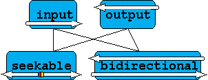
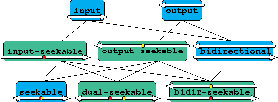

mode_of要让一系列 过滤器 和 设备 协同工作, 它们必须具有某些共同性质. 最基本的要求是它们具有相同的 字符类型; 过滤器和设备为特定目的而使用时必须共享的其他性质的集合称为 模式.
模板 stream_buffer 与 stream 各以一个模式为参数, 该模式由一个 模式标签 表示.
Iostreams 库支持八种模式, 将在下一节描述 (另参见 图 2). 其中四种最重要 (参见 图 1). 模式 input 与 output 迄今最常用. 刚接触 Iostreams 库的读者不妨主要专注于这两种模式.
模式可按若干方式分类:
表示 可选行为 的概念与模式无关, 因此一组过滤器和设备要协同工作无需共享它们:
模式汇总于下表:
关于模式选择的更多内容, 参见 设计理由.
以下各图展示模式之间的细化层次.
|
图 1. 四种最重要的模式  |
|
|||||||||||||||
|
图 2. 模式的完整层次  |
||||||||||||||||
每种模式由一个 模式标签 表示, 定义于头文件 <boost/iostreams/traits.hpp>. 八种模式有八个标签: input、output、bidirectional、input_seekable、output_seekable、seekable、dual_seekable 与 bidirectional_seekable.[1] 与标准库迭代器类别标签一样, 对应于某模式的标签可转换为对应于该模式所细化之各模式的标签.
此外还有一个 伪模式标签 dual_use, 用于定义 DualUseFilters — 它们可执行输入或输出, 但不能同时执行两者. 这有助于减少不同过滤器类型的数量. 正则表达式过滤器、换行过滤器 以及压缩与解压过滤器的模式都是 dual_use, 因此既可用于输入流也可用于输出流.
mode_of要确定过滤器或设备之模型的模式, 请使用元函数 mode_of.
[1]按照惯例, 标签结构的名称以 "_tag" 结尾. 由于模式标签在用户代码中频繁出现, 为提高可读性, 这一后缀被省去.
© 版权所有 2008 CodeRage, LLC
© 版权所有 2004-2007 Jonathan Turkanis
按 Boost 软件许可 1.0 版分发. (随附文件 LICENSE_1_0.txt, 或复制于 http://www.boost.org/LICENSE_1_0.txt)